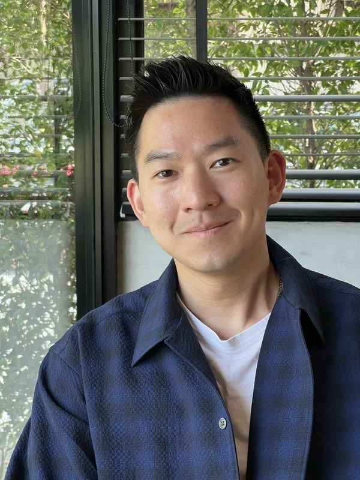
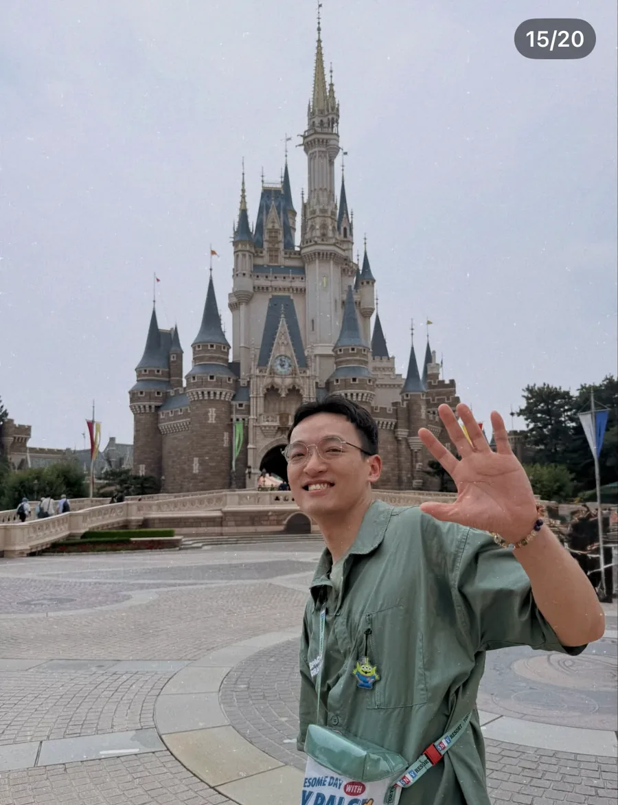
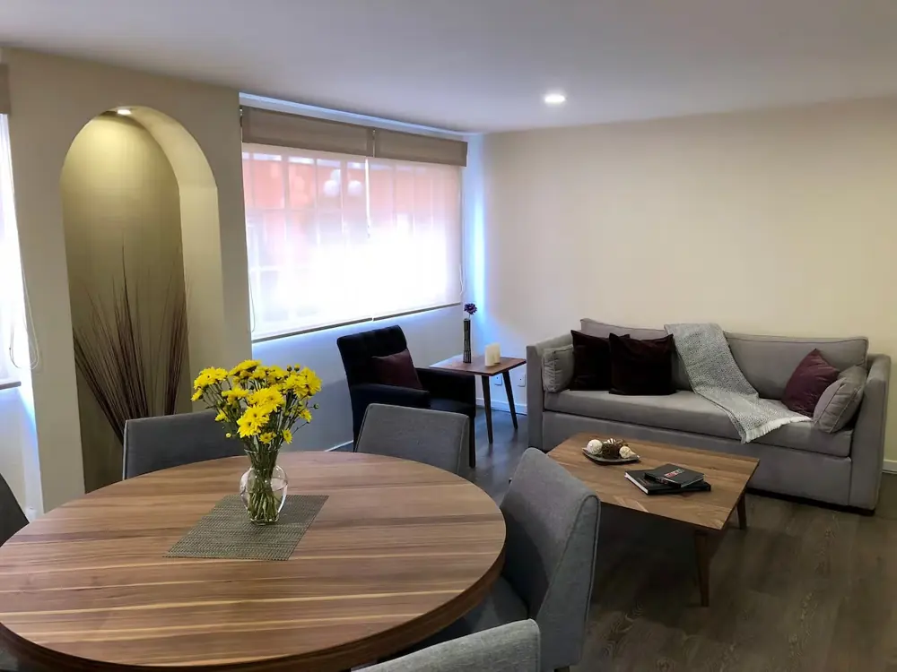

在一座城市，走過不同時代
墨西哥城的歷史中心建立在阿茲特克都城特諾奇蒂特蘭的遺址上。古代神殿、殖民時期建築與今日街景並存，
來源：UNESCO 墨西哥城歷史中心 ↗亡靈節 / DÍA DE MUERTOS · 10.24 — 11.03
Mexico City · Oaxaca · Mérida · Yucatán · Cancún
從墨西哥城開始，沿著亡靈節的文化脈絡一路向南，再飛往猶加敦半島。九個人，一條路線，從城市、墓園一路走到加勒比海。

Jorge、Hui-Chen、Risa、Michael、Zola、Vivian、Harry、Jill、Rick
九個人一起探險2026亡靈節





墨西哥城的歷史中心建立在阿茲特克都城特諾奇蒂特蘭的遺址上。古代神殿、殖民時期建築與今日街景並存，
來源：UNESCO 墨西哥城歷史中心 ↗亡靈節是墨西哥原住民社群紀念逝去親友、迎接他們暫返人間的傳統。祭壇、花瓣、蠟燭與親人生前喜愛的食物，都是表達思念的方式。各地習俗不同，走進祭儀時，記得尊重家屬與社群。
來源：UNESCO 亡靈節文化 ↗猶加敦半島上的奇琴伊察，是重要的馬雅文明遺址。金字塔、球場與石造建築，展現當時的城市生活、信仰與建築技術；
來源：UNESCO 奇琴伊察 ↗先以目前已確認的交通與住宿為骨架；景點保留可調整空間。
行程細節可在確認景點後再展開。
行程細節可在確認景點後再展開。
行程細節可在確認景點後再展開。
行程細節可在確認景點後再展開。
行程細節可在確認景點後再展開。
行程細節可在確認景點後再展開。
行程細節可在確認景點後再展開。
行程細節可在確認景點後再展開。
行程細節可在確認景點後再展開。
行程細節可在確認景點後再展開。
行程細節可在確認景點後再展開。
行程細節可在確認景點後再展開。
以目前確認資料建立；九人未必全部同班，後續可逐人加入航班卡。

整套房源／3 bedrooms／4 beds／2 bathrooms。7 人入住；目前住宿費記錄為免費。
VIEW LISTING ↗
7 人／NT$41,367。四張住宿照片輪播；住宿資料以你提供的訂房內容為準。
VIEW HOTEL ↗
7 人入住；金額待確認。三張住宿照片輪播，實際房型以訂房內容為準。
VIEW HOTEL ↗11 月 3 日，從 Mérida Teya 前往 Cancún Aeropuerto。七人同一筆訂位 EC4911346。

我們不是來看「萬聖節」，而是進入一個關於記憶、家人與祭奠的文化節期。
日期為原表參考安排，非已確認的 2026 官方活動日。MEX＝墨西哥城；OAX＝瓦哈卡。
目前只放已知金額，不把未知費用亂估進總額。
完整總額待補：住宿、ADO、Volaris、每人國際機票等資料確認後自動整理。

墨西哥：A／B 型插座，127V／60Hz。
台灣常見 A／B 型插頭不需要轉接頭。
手機、筆電、相機充電器若標示 100–240V，可直接使用；僅標示 110V 的電器，先確認是否支援 127V。
1 MXN ≈ NT$1.76
100 MXN ≈ NT$176；500 MXN ≈ NT$880。
刷卡選 MXN，備小面額現金。
2026/09/30 參考中間價，另計價差與手續費。
有效期涵蓋 10/24–11/3，確認手機相容、合作網路及熱點功能。
美國轉機需確認方案涵蓋美國。先下載離線地圖與票券，抵達後依方案啟用。
結伴行動、約好集合點與回程接送。
帶外套、手電筒、行動電源；包包拉好，手機與現金分開收。
墓園拍照先詢問，不碰供品、不擋動線。
主力：穿習慣、防滑的運動鞋或步行鞋。
天然井：水鞋或固定帶涼鞋。
夜間穿包覆腳趾的鞋，多帶替換襪。
護照、保險與票券備份；藥品、充電線、行動電源、防曬、帽子、雨具、防蚊用品。
短袖＋薄長袖＋長褲＋輕外套。
各段交通的行李規則分開確認。